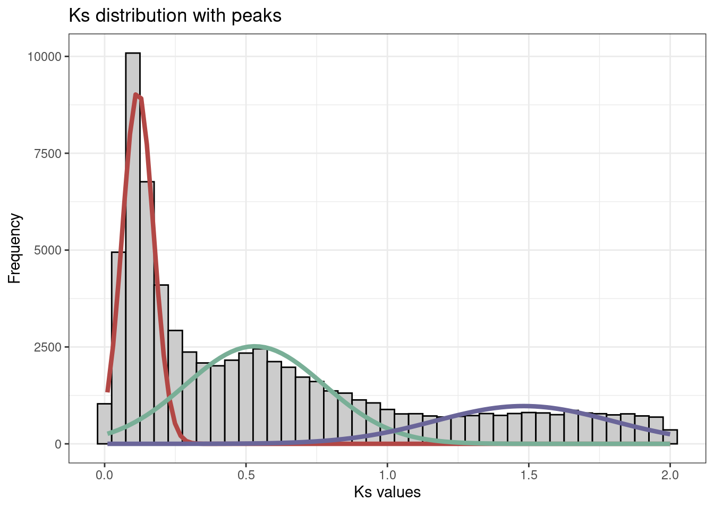
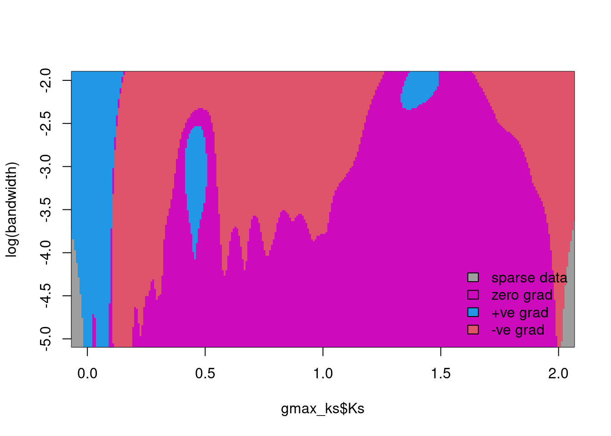

Gene and genome duplications are a source of raw genetic material for evolution (Ohno 2013). However, whole-genome duplications (WGD) and small-scale duplications (SSD) contribute to genome evolution in different manners. In this lesson, you will learn how to identify duplicated genes derived from WGD and SSD from whole-genome sequence data.
5.1 Goals of this lesson
In this lesson, you will learn to:
Identify duplicated gene pairs from whole-genome protein sequences.
Classify duplicated genes based on their mode of duplication.
Calculate substitution rates (\(K_a\) and \(K_s\)) per substitution site.
Identify whole-genome duplication events in Ks distributions.
5.2 Identifying duplicated gene pairs
Here, we will use the example data sets that come with the {doubletrouble} package, which contain sequences and annotation for the yeast species Saccharomyces cerevisiae and Candida glabrata. The example data are:
yeast_seq: A list of AAStringSet objects (length 2, Scerevisiae and Cglabrata) containing whole-genome protein sequences.
yeast_annot: A GRangesList object (length 2, Scerevisiae and Cglabrata) containing gene annotation (i.e., gene ranges).
diamond_intra: A list of data frames (length 1, Scerevisiae_Scerevisiae) with the output of DIAMOND similarity searches between S. cerevisiae against itself.
diamond_inter: A list of data frames (length 1, Scerevisiae_Cglabrata) with the output of DIAMOND similarity searches between S. cerevisiae and C. glabrata.
library(doubletrouble)# Load datadata(yeast_seq)data(yeast_annot)data(diamond_intra)data(diamond_inter)# Take a look at the datahead(yeast_seq)
I II III IV V VI VII VIII IX X XI XII XIII XIV XV XVI
117 456 184 836 323 139 583 321 241 398 348 578 505 435 597 511
Mito
28
5.3 Classifying duplicate pairs
{doubletrouble} classifies duplicated gene pairs into the following modes: whole-genome duplication (WGD), tandem duplication (TD), proximal duplication (PD), transposed duplication (TRD, optional), and dispersed duplication (DD).
To find WGD-derived genes, {doubletrouble} relies on synteny information identified with {syntenet} (Almeida-Silva et al. 2023). Thus, we first need to process the input sequences and annotation to a format that {syntenet} understands. We do that with the process_input() function.
library(syntenet)# Process input datapdata <-process_input(yeast_seq, yeast_annot)# Inspect the outputnames(pdata)
The processed data can be used as input to run_diamond(), which performs similarity searches with DIAMOND to identify intra and interspecies homologous genes. Here, as we already have pre-computed DIAMOND results in diamond_intra and diamond_inter, we will not execute run_diamond(), but you can see its usage in the {doubletrouble}’s vignette.
Now, let’s classify the duplicated gene pairs of S. cerevisiae.
# Classify duplicated genes using the full schemec_full <-classify_gene_pairs(blast_list = diamond_intra,annotation = pdata$annotation,binary =FALSE,blast_inter = diamond_inter)# Inspecting the outputnames(c_full)
How many gene pairs are there per mode? Hint: you can use the table() function.
Solution
table(c_full$Scerevisiae$type)
DD PD TD TRD WGD
3121 80 42 3 342
5.4 Assigning genes into unique modes of duplication
Because a gene can be duplicated multiple times by different mechanisms, the same gene can appear in multiple duplicated gene pairs. However, {doubletrouble} lets you classify genes into unique modes of duplication using the following hierarchy: WGD > TD > PD > TRD > DD. Let’s do that with the function classify_genes().
# Classify genes into unique modes of duplicationc_genes <-classify_genes(c_full)# Inspecting the outputnames(c_genes)
Now, you can use the function pairs2kaks() to calculate rates of nonsynonymous substitutions per nonsynonymous site (\(K_a\)), synonymouys substitutions per synonymous site (\(K_s\)), and their ratios (\(\frac{K_a}{K_s}\)). Rates are calculated using the codon models in KaKs_Calculator 2.0 (Wang et al. 2010), which are implemented in the Bioconductor package {MSA2dist}.
For that, we will need the CDS (DNA sequences) for all S. cerevisiae genes, which are stored in {doubletrouble}’s example data set cds_scerevisiae.
# Store CDS in a listcds_list <-list(Scerevisiae = cds_scerevisiae)# Calculate Ka, Ks, and Ka/Ks for the first 5 gene pairs for demonstration onlyselected_pairs <-list(Scerevisiae = c_full$Scerevisiae[1:5, ])kaks <-pairs2kaks(selected_pairs, cds_list)# Inspect the outputkaks
Peaks in \(K_s\) distributions indicate WGD events. However, because of saturation at high \(K_s\) values, only recent WGD events can be reliably identified from \(K_s\) distributions. Here, to demonstrate how to identify such peaks, we will use pre-computed \(K_s\) values for all soybean paralogous pairs, which is also part of the example data in {doubletrouble}.
Bayesian Information Criterion (BIC):
E V
2 -86950.21 -67759.55
3 -86977.96 -54203.15
Top 3 models based on the BIC criterion:
V,3 V,2 E,2
-54203.15 -67759.55 -86950.21
# Inspect outputnames(peaks)
[1] "mean" "sd" "lambda" "ks"
str(peaks)
List of 4
$ mean : Named num [1:3] 0.118 0.531 1.481
..- attr(*, "names")= chr [1:3] "1" "2" "3"
$ sd : num [1:3] 0.0549 0.2442 0.3136
$ lambda: num [1:3] 0.352 0.433 0.215
$ ks : num [1:71231] 0.375 0.0453 0.1041 0.4733 1.2292 ...
# Visualize peaksplot_ks_peaks(peaks)

Finally, since GMMs can lead to overfitting and overclustering in some cases, let’s assess the significance of the identified peaks with SiZer maps.
feature::SiZer(gmax_ks$Ks)
Warning: no DISPLAY variable so Tk is not available

We can see that the 3 peaks are indeed supported, as indicated by the blue regions.
Exercises
Use the output of find_ks_peaks() with the soybean data set to answer the following questions:
What are the mean and standard deviation for the peaks?
How many gene pairs have Ks values between 0 and 0.4? What does that mean about the age of such gene pairs?
Solution
# Q1peaks$mean
1 2 3
0.1177495 0.5308772 1.4811982
peaks$sd
[1] 0.05488597 0.24418649 0.31357988
# Q2length(peaks$ks[peaks$ks <0.4])
[1] 35269
Genes with \(K_s\) between 0 and 0.4 are young, and those in this range that are present in syntenic regions have likely originated from a recent WGD event.
References
Almeida-Silva, Fabricio, Tao Zhao, Kristian K Ullrich, M Eric Schranz, and Yves Van de Peer. 2023. “Syntenet: An r/Bioconductor Package for the Inference and Analysis of Synteny Networks.”Bioinformatics 39 (1): btac806.
Ohno, Susumu. 2013. Evolution by Gene Duplication. Springer Science & Business Media.
Wang, Dapeng, Yubin Zhang, Zhang Zhang, Jiang Zhu, and Jun Yu. 2010. “KaKs_calculator 2.0: A Toolkit Incorporating Gamma-Series Methods and Sliding Window Strategies.”Genomics, Proteomics & Bioinformatics 8 (1): 77–80.